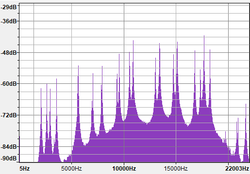

| Home | Solid-bar Wind Chimes | Chime Trees | Tubular Wind Chimes | About |
|---|

A 21-piece inharmonic chime tree, spanning an interval of a 12th.
I handcraft wind chimes and chime trees of solid-bar and tubular varieties. I precisely tune every chime, making them ideal for acoustical research, musical performance, and ambient listening. Contact me if you would like a set. All proceeds benefit charity.
A tuning celebrating illumination: G, C, D, G.
E lydian wind chimes
Wind chimes tuned in Raga Malkauns.
A modal wind chimes
Db minor pentatonic wind chimes
Wind chimes tuned in Raga Hindol.
Spectrograph of Raga Hindol chimes revealing the four fundamental tones, as well as various harmonics extending beyond the threshold of human hearing.